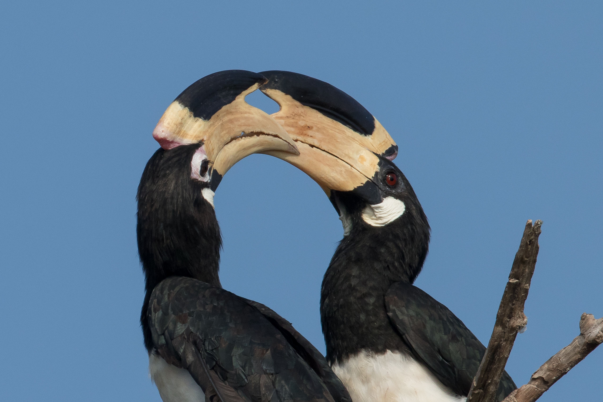

Tierewelt, Pflanzen, Kultur und Wandern- Reise Sri Lanka
Tag 1
Nach der Ankunft in Sri Lanka werden Sie von unserem Reiseführer-Team zum Hotel in Negombo geführt. Der restliche Tag steht Ihnen zur freien Verfügung.
Abendessen & Übernachtung im Hotel in Negombo.
Tag 2
Nach dem Frühstück fahren wir nach Habarana. Am Nachmittag um 14:30 Uhr beginnen wir unsere erste Safari im Minneriya Nationalpark.
Am Nachmittag cir um 14.30 beginnen wir unsere erste Safari im Minneriya Nationalpark. Dieser befindet sich in Higurakgoda Divisional Secretariat im Bezirk Polonnaruwa in der Nord-Zentral-provinz. Die Gesamtfläche des Parks beträgt 8889.411 Hektaren. Minneriya wurde am 12. August 1997 zum Nationalpark erklärt und unter der gleichen Verordnung für Besucher im Mai 1998 eröffnet. Das Minneriya Reservoir, zusammen mit seiner Umgebung, spielt eine wichtige Rolle als Feuchtgebiet, da es eine hohe Biodiversität hat. 24 Säugetierarten wurden von diesem Park gemeldet. Die Wichtigste ist der wilde Elefant (Elephant maximus) mit 150-200 Exemplaren. Minnerya Reservoir und seine umliegenden Feuchtgebiete sind Lebensraum für eine grosse Anzahl an aquatischen Vogelarten. Früh morgens und spät abends sind die optimalen Zeiten um einheimische Vögel und Zugvögel zu beobachten. Drei der vier einheimischen Fischarten im Reservoir sind gefährdet, während die eingeführten Thilapia-Arten dominieren.
Rückkehr ins Hotel nach der Safari.
Abendessen & Übernachtung in Habarana.


Tag 3
Nach dem Frühstück besuchen wir den Höhlen Tempel in Dambulla. Vormittags erfahren Sie mit einer Traditionellen Village Tour. Abends Aufstieg auf den Pidurangala Rock zum Sonnenuntergang.
Abendessen & Übernachtung in Habarana.


Tag 4
Nach dem Frühstück fahren Sie nach Kandy. Unterwegs besuchen Sie einen Gewürzgarten. Nachmittags besuchen Sie die weltberühmten Botanischen Gärten von Kandy. Abends fahren Sie zum Hotel.
Abendessen & Übernachtung in Kandy.


Tag 5
Am frühen Morgen fahren Sie mit einem eingepackten Frühstück nach Heeloya. Heute machen Sie Ihre erste Wanderung in der Umgebung des Heeloya Dorfes. Rückkehr ins Hotel in Kandy.
Abendessen & Übernachtung in Kandy.

Tag 6
Nach dem Frühstück fahren Sie zum Bahnhof in Kandy und setzen die Reise mit dem Zug ins Hochland fort. Am späten Nachmittag besuchen Sie den Victoria Park in Nuwaraeliya.
Abendessen & Übernachtung in Kandy.
Tag 7
Am frühen Morgen fahren Sie mit einem eingepackten Frühstück zum Horton Plains National Park. Heute machen Sie Ihre zweite Wanderung im Horton Plains National Park. Nachmittags Stadtbesichtigung von Nuwaraeliya.
Abendessen & Übernachtung in Nuwaraeliya.


Tag 8
Transfer zum Flughafen – ca. 4-5 Stunden Fahrzeit.
Im Preis inbegriffen:
- Unterbringung in 3-Stern-Hotels, einfacher Unterkunft oder Camping
- Verpflegung gemäß Reiseplan
- Klimatisierte Transfers mit einem Englisch oder Deutsch sprechenden Chauffeur/Führer
- Alle erwähnten Aktivitäten und Park-Eintrittsgebühren
- 2 Liter Wasser pro Person und Tag
- Preis pro Person im Doppelzimmer
Liste der Besichtigungen während der Tour:
- Minneriya National Park
- Pidurangala Rock
- Dambulla Höhlen Tempel
- Traditionelle Village Tour
- Botanischer Garten Kandy
- Horton Plains National Park
- Victoria Park in Nuwaraeliya
Übernachtungen und Verpflegung während dieser Tour (für 2 Erwachsene):
- 1 Übernachtung in Negombo, Abendessen + Frühstück (2- oder 3-Stern Hotel)
- 2 Übernachtungen in Habarana, Frühstück + Abendessen (2- oder 3-Stern Hotel)
- 1 Übernachtung in Kitulgala, Frühstück + Abendessen (2- oder 3-Stern Hotel)
- 2 Übernachtungen in Sinharaja, Frühstück (einfache Unterkunft)
- 3 Übernachtungen in Tissamaharama, Frühstück + Abendessen (einfache Camping-Unterkunft)
- 2 Übernachtungen in Mirissa (2- oder 3-Stern Hotel), Abendessen + Frühstück
- 2 Übernachtungen in Bentota (2- oder 3-Stern Hotel), Abendessen + Frühstück
Wir können diese Rundreise Ihren Wünschen entsprechend anpassen.